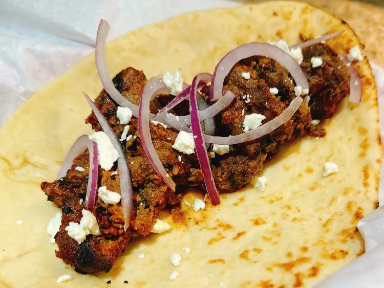

Bihari Kabab

Description
These uniquely tender, aromatic, and smoky kababs remind me of my
childhood in Pakistan. The smell that emanates from the grill has everyone
drooling in anticipation every time I make these. Serve them with naan,
sliced red onions, tamarind chutney, and green chutney. Try this unique
and ancient recipe today. You won't regret it!
Ingredients
Kebabs:
-
1 1/4 pounds beef tenderloin, sliced into 1/4-inch-thick strips, about
1-1/2 X 6 inches
- 1/4 cup avocado oil
- 1/2 onion, thinly sliced
- 1 kiwi, peeled and quartered
- 1 1/2 tablespoons gram flour
- 1/2 tablespoon poppy seeds
- 1 tablespoon garlic paste
- 1 tablespoon ginger paste
- 1 small serrano chile pepper
- 1/4 cup mustard oil
- 2 tablespoons white vinegar
- 1/4 cup plain full fat yogurt
Whole Spices:
- 1/2 whole nutmeg seed
- 1 tablespoon whole mace
- 5 star anise pods
- 5 whole dried red Kashmiri chilies
Ground Spices:
- 1 teaspoon chili powder
- 1 teaspoon ground cumin
- 1 teaspoon garam masala
- 1 teaspoon freshly ground black pepper
- 1 teaspoon salt
Steps
-
Pound tenderloin strips with a meat mallet until they are very thin; set
aside.
-
Heat avocado oil in a frying pan over medium heat. Fry onion in the hot
oil until it is a deep brown, about 5 minutes. Strain browned onion into
a small bowl using a slotted spoon, and set aside to use later.
-
Peel kiwi, cut into quarters, and set aside in a small bowl for later.
-
Heat a small non-stick skillet over medium heat, and toast gram flour
until lightly browned and nutty, 2 to 4 minutes; transfer to a small
bowl and set aside. Dry-roast poppy seeds in the same skillet until
lightly brown and aromatic, 2 to 4 minutes. Remove to a small bowl; set
aside.
-
In the same skillet, dry-roast nutmeg, mace, star anise, and Kashmiri
chilies together until fragrant, 2 to 4 minutes. Transfer the whole
spices and chilies to a spice grinder, and grind them to a coarse
powder.
-
Add browned onions, kiwi, ginger paste, garlic paste, and serrano chile
to the bowl of a food processor, and grind to a paste, about 30 seconds.
Pour in mustard oil, white vinegar, and yogurt and pulse the food
processor until everything is well blended, about 15 seconds.
-
Last of all, add roasted poppy seeds, roasted gram flour, roasted ground
whole spices, chili powder, cumin, garam masala, black pepper, and salt
to the food processor; process marinade for 1 minute.
-
Spoon marinade into a resealable plastic bag and add tenderized beef
strips. Seal bag and squeeze gently to coat beef on all sides with
marinade. Refrigerate for at least 6 hours, but ideally overnight.
-
Remove marinated beef from the refrigerator; thread beef strips on
sturdy metal skewers, packing them in tightly. Reserve any leftover
marinade to baste the kababs with as they cook. This prevents them from
drying out.
-
Preheat an outdoor grill to 500 degrees F (260 degrees C) and lightly
oil the grate.
-
Grill kababs on the preheated grill, uncovered, for 5 minutes per side.
-
Reduce grill temperature to 350 degrees F (175 degrees C), cover the
grill, and cook kababs for 10 minutes. Turn kebabs, brush with marinade,
and continue cooking until the internal temperature of the meat reaches
170 degrees F (77 degrees C), about 10 minutes more. If kababs look a
bit dry at any point in the cooking process, brush both sides with a
little bit of avocado oil.
-
Remove skewers to a serving dish. Discard any uncooked marinade. Enjoy
the kababs with naan, sliced red onions, tamarind chutney, and green
chutney.